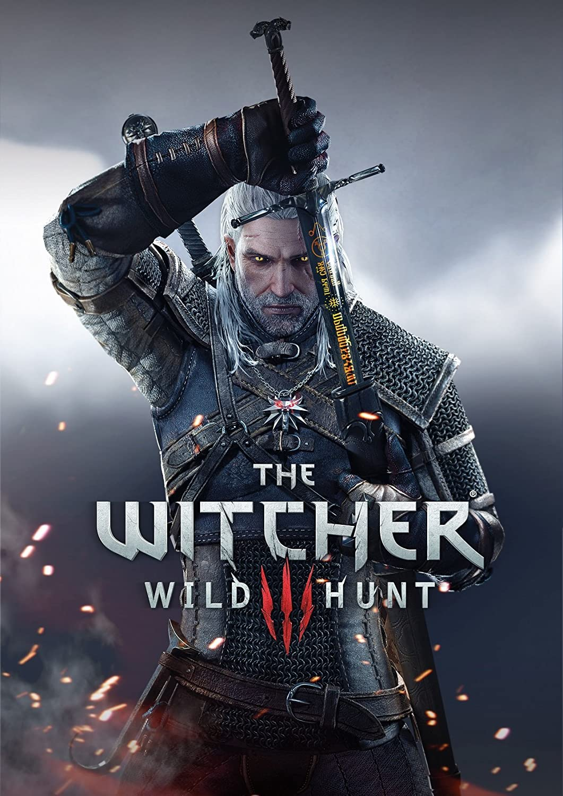
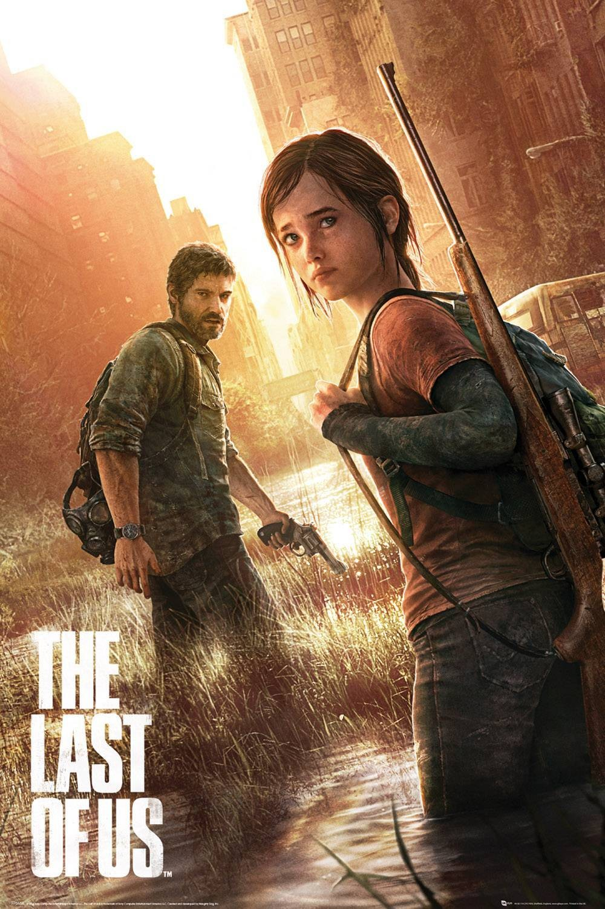
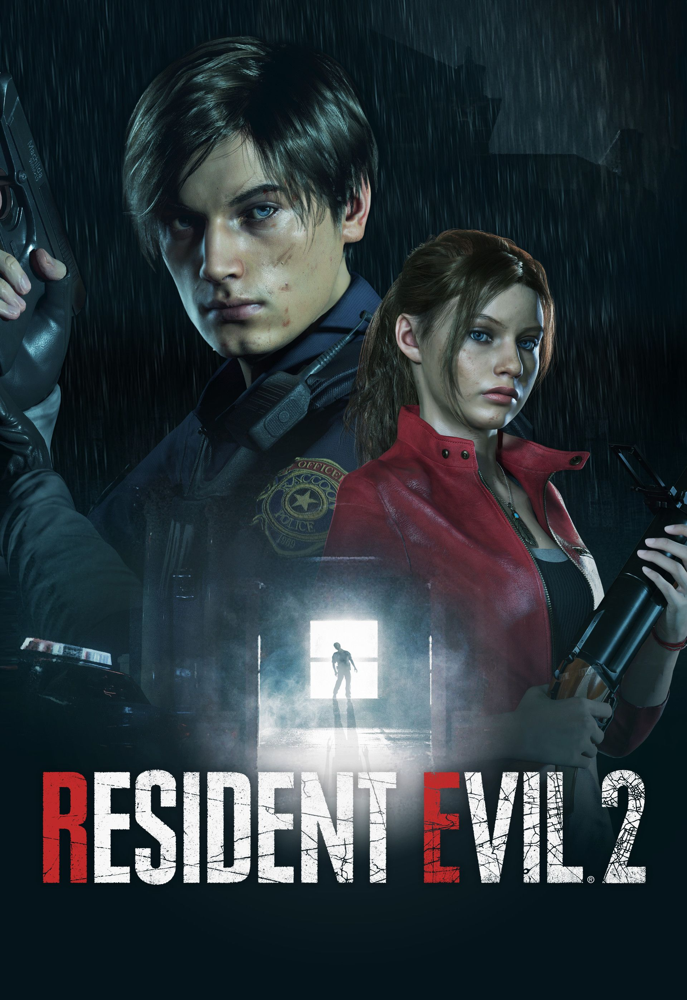
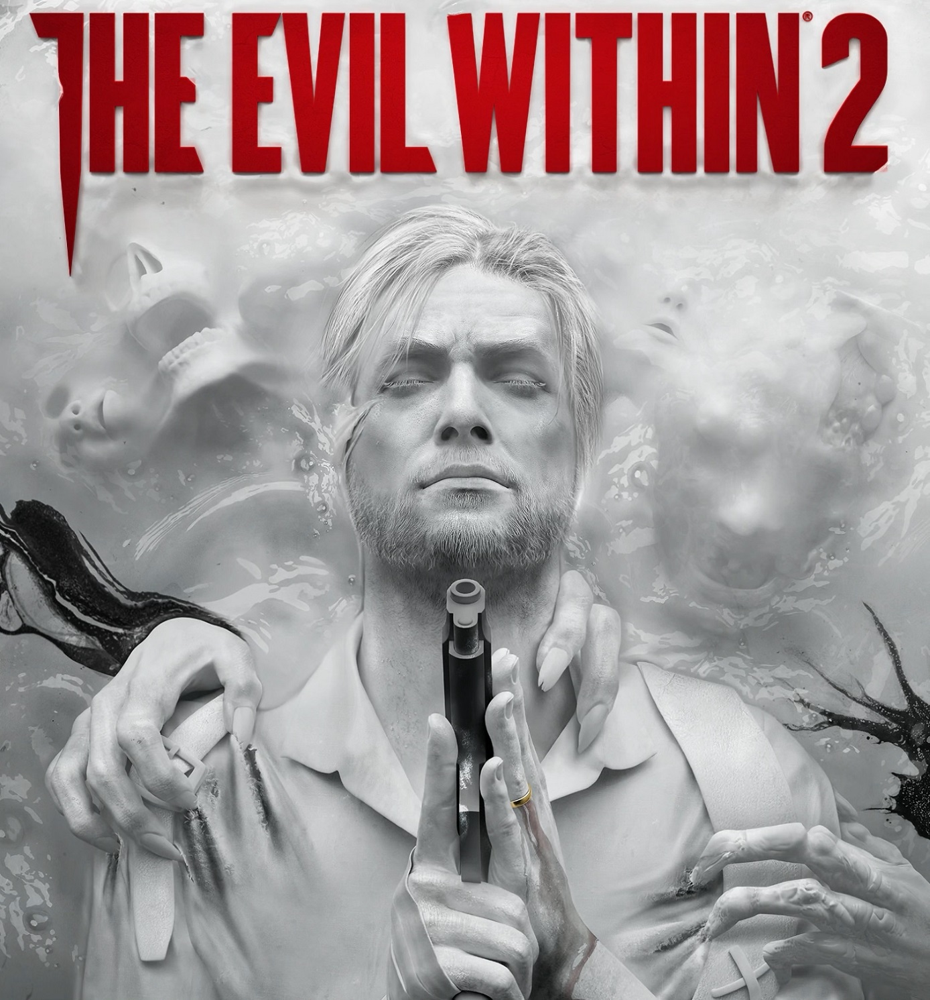
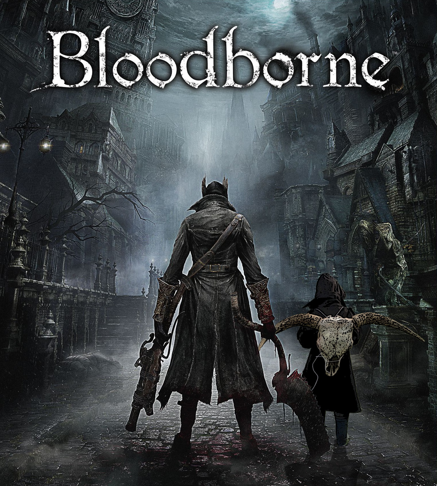
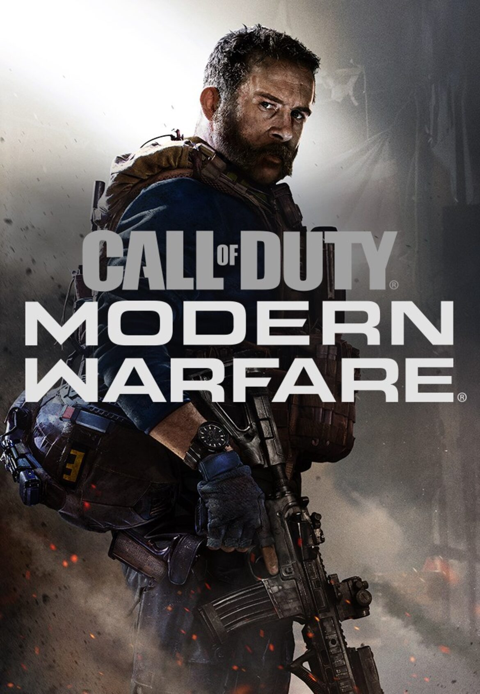
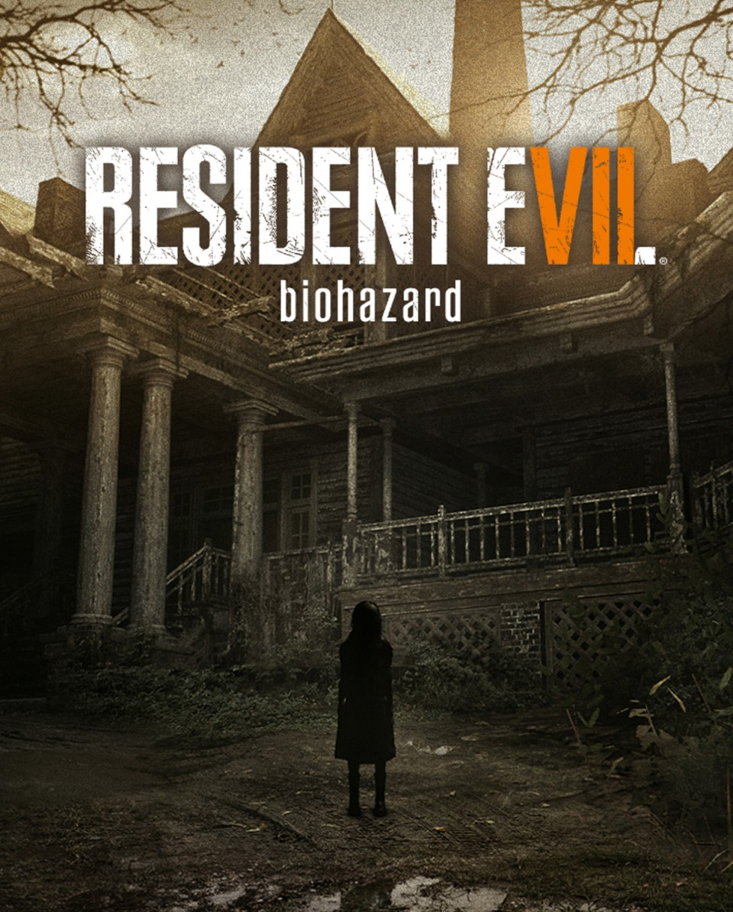
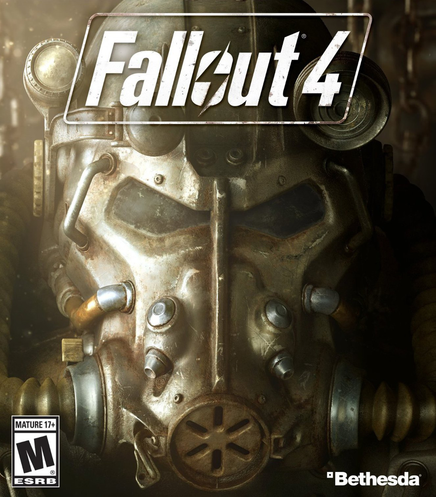

1: THE WITCHER 3: WILD HUNT
With the Empire attacking the Kingdoms of the North and the Wild Hunt, a cavalcade of ghastly riders, breathing down your neck, the only way to survive is to fight back. As Geralt of Rivia, a master swordsman and monster hunter, leave none of your enemies standing. Explore a gigantic open world, slay beasts and decide the fates of whole communities with your actions, all in a genuine next generation format. Also known as "The Witcher III: Wild Hunt"
2: THE ELDER SCROLLS V: SKYRIM

The next chapter in the Elder Scrolls saga arrives from the Bethesda Game Studios. Skyrim reimagines the open-world fantasy epic, bringing to life a complete virtual world open for you to explore any way you choose. Play any type of character you can imagine, and do whatever you want; the legendary freedom of choice, storytelling, and adventure of The Elder Scrolls is realized like never before. Skyrim's new game engine brings to life a complete virtual world with rolling clouds, rugged mountains, bustling cities, lush fields, and ancient dungeons. Choose from hundreds of weapons, spells, and abilities. The new character system allows you to play any way you want and define yourself through your actions. Battle ancient dragons like you've never seen. As Dragonborn, learn their secrets and harness their power for yourself.
3: DARK SOULS 3

Developed by Japanese developer FromSoftware, DARK SOULS III is the latest chapter in the DARK SOULS series with its trademark sword and sorcery combat and rewarding action RPG gameplay. Players travel across a wide variety of locations in an interconnected world of unrelenting challenge and deep RPG gameplay as they search for a way to survive the coming apocalypse.
4: THE LAST OF US
The Last of Us has been rebuilt for the PlayStation4 system. Now featuring full 1080p, higher resolution character models, improved shadows and lighting, in addition to several other gameplay improvements. 20 years after a pandemic has radically changed known civilization, infected humans run wild and survivors are killing each other for food, weapons; whatever they can get their hands on. Joel, a violent survivor, is hired to smuggle a 14 year-old girl, Ellie, out of an oppressive military quarantine zone, but what starts as a small job soon transforms into a brutal journey across the U.S. The Last of Us Remastered includes the Abandoned Territories Map Pack, Reclaimed Territories Map Pack, and the critically acclaimed The Last of Us: Left Behind Single Player campaign that combines themes of survival, loyalty, and love with tense, survival-action gameplay.
5: RESIDENT EVIL 2
In Resident Evil 2, the classic action, tense exploration, and puzzle solving gameplay that defined the Resident Evil series returns. Players join rookie police officer Leon Kennedy and college student Claire Redfield, who are thrust together by a disastrous outbreak in Raccoon City that transformed its population into deadly zombies. Both Leon and Claire have their own separate playable campaigns, allowing players to see the story from both characters’ perspectives. The fate of these two fan favorite characters is in players hands as they work together to survive and get to the bottom of what is behind the terrifying attack on the city. Will they make it out alive?
6: THE EVIL WITHIN 2
You are Detective Sebastian Castellanos and at your lowest point. But when given a chance to save your daughter, you must enter a world filled with nightmares and discover the dark origins of a once-idyllic town to bring her back. Horrifying threats emerge from every corner as the world twists and warps around you. Will you face adversity head on with weapons and traps, or sneak through the shadows to survive?
7: BLOODBORNE
Bloodborne is an action RPG in which you hunt for answers in the ancient city of Yharnam, now cursed with a strange endemic illness spreading through the streets like a disease. Peril, death and madness infest this dark world, and you're tasked with uncovering its darkest secrets which will be necessary for you to survive. Armed with a singular arsenal of weaponry, including guns and saw cleavers, you'll require wits, strategy and reflexes to dispatch the agile and intelligent enemies that guard the city's underbelly. You will utility holy chalices to access an array of vast underground ruins, chock full of traps, beasts, and rewards, to explore and conquer on your own or with other people.
8: CALL OF DUTY: MODERN WARFARE
Prepare to go dark, Modern Warfare® is back! The stakes have never been higher as players take on the role of lethal Tier One operators in a heart-racing saga that will affect the global balance of power. Call of Duty®: Modern Warfare® engulfs fans in an incredibly raw, gritty, provocative narrative that brings unrivaled intensity and shines a light on the changing nature of modern war. Developed by the studio that started it all, Infinity Ward delivers an epic reimagining of the iconic Modern Warfare® series from the ground up. In the visceral and dramatic single-player story campaign, Call of Duty®: Modern Warfare® pushes boundaries and breaks rules the way only Modern Warfare® can. Players will engage in breathtaking covert operations alongside a diverse cast of international special forces throughout iconic European cities and volatile expanses of the Middle East. And the story doesn't end there. In Call of Duty®: Modern Warfare®, players will be thrust into an immersive narrative spanning the entire game. Experience the ultimate online playground with classic multiplayer, or squad-up and play cooperatively in a collection of elite operations accessible to all skill levels.
9: RESIDENT EVIL 7
While Resident Evil 7 draws from the series’ roots of atmospheric survival horror, it also delivers a new level of terror. In the Resident Evil games of yesteryear, players braced for fear in the first-person via the creepy door-opening scenes, and Resident Evil 7 ramps up that tension with an immersive first-person view and a photorealistic graphical style. Capcom is able to achieve a higher degree of visual fidelity thanks to the new proprietary in-house RE Engine that includes VR oriented tools. With the RE Engine plus industry leading audio and visual technologies, you experience every abhorrent detail up close and personal in Resident Evil 7. Playing the game in the PlayStation VR Mode escalates the unsettling feeling of presence to a level that horror fans have never experienced. The full gameplay experience is available in the included PlayStation VR Mode from beginning to end. No Resident Evil you’ve ever survived could prepare you for this. [Capcom]
10: FALLOUT 4
As the sole survivor of Vault 111, you enter a world destroyed by nuclear war. Every second is a fight for survival, and every choice is yours. Only you can rebuild and determine the fate of the Wasteland. Welcome home.